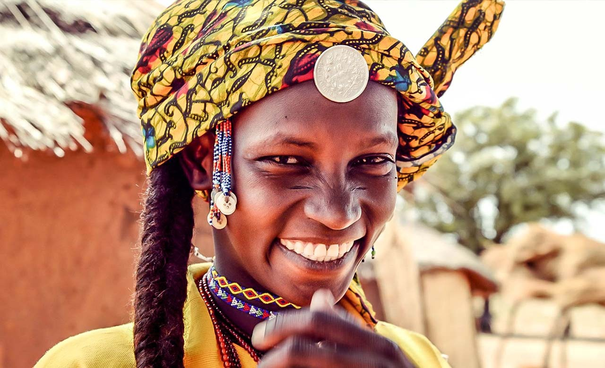
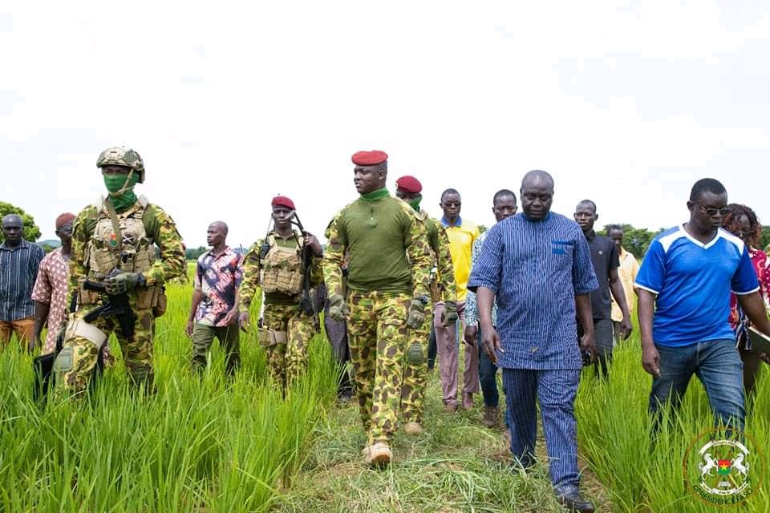
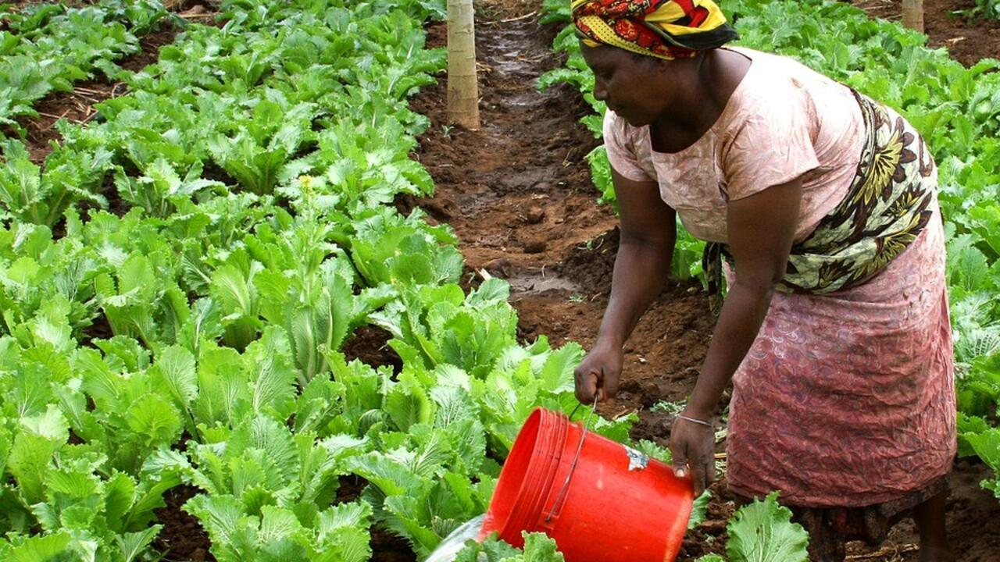
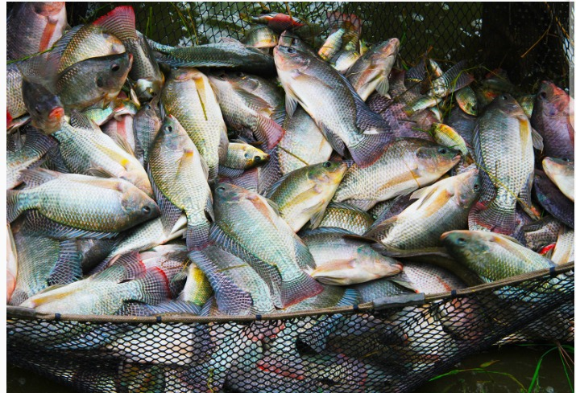
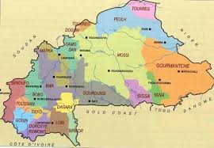
Chaque région possède des traditions, des langues et un patrimoine propre. Ce site les met en avant avec fierté.
Agriculture, mines, artisanat, commerce — chaque région contribue à l'économie nationale de façon singulière.
Monuments, Falaises, cascades, ruines, faune -- chaque region contribue à l'émergence touristique du pays des Hommes intègres
Le Burkina Faso est un pays d'Afrique de l'Ouest, connu pour sa diversité culturelle et ses potentialités naturelles.
Géographie et Population
Superficie : 274 200 km².
Population : ~25 millions (2026).
Capitale : Ouagadougou.
Densité : ~86 hab/km².
Taux d'urbanisation : ~28-30%.
Langue officielle : Français
croissance PIB 2024 : 4,9 %.
PIB nominal : 122e mondial.
Monnaie : Franc CFA (XOF).
Principales exportations : Or (1er produit), Coton.
Dette publique : 14,87 milliards $ (fin juin 2025).
L'agriculture est un pilier de l'économie du Burkina Faso, avec une
production diversifiée de céréales, de légumes et de fruits. Elle emploie environ 80% de la population active.
Les principales cultures comprennent maïs, mil, riz, Coton, sésame,sorgho, niébé
L'agriculture est confrontée à des défis tels que la variabilité climatique,
la dégradation des sols et l'accès limité aux intrants agricoles.
L'agriculture contribue significativement au PIB à environ (20.3%)du pays et est essentielle pour la sécurité alimentaire et les moyens de subsistance de la population.
Le Burkina Faso est riche en ressources naturelles, notamment en or, en coton et en minerais. Ces ressources contribuent significativement à l'économie du pays. 3ieme producteur d'or en Afrique, 1er producteur de coton en Afrique de l'Ouest Le pays a produit au alentours de 60.7 tonnes d'or en 2023, principalement dans les régions de l'Est et du Centre-Nord. L'exploitation minière est un secteur clé pour le développement économique du Burkina Faso, mais elle est également confrontée à des défis tels que la gestion durable des ressources, les impacts environnementaux.
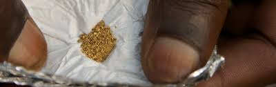
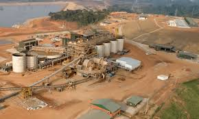
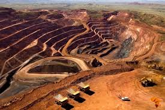
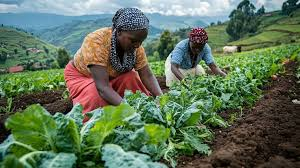
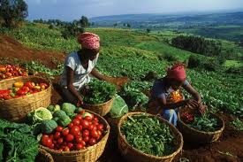
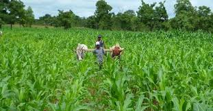
Le Burkina Faso abrite une riche diversité culturelle, avec plus de 60 groupes ethniques, chacun ayant ses propres traditions, langues et artisanats. L'artisanat est un secteur important de l'économie locale, avec des produits tels que les tissus tissés à la main, les poteries, les bijoux et les sculptures en bois. Les artisans burkinabè sont réputés pour leur savoir-faire et leur créativité, contribuant à la préservation du patrimoine culturel du pays et à l'économie locale.
Le Burkina Faso est également connu pour ses festivals culturels, tels que le Festival Panafricain du Cinéma et de la Télévision de Ouagadougou (FESPACO), qui célèbre le cinéma africain et attire des visiteurs du monde entier. Aussi pour le Salon International de l'Artisanat de Ouagadougou (SIAO), qui met en avant l'artisanat africain et favorise les échanges commerciaux.
Le Burkina Faso abrite l'une des structures éducatives les plus importantes d'Afrique de l'Ouest. Qui est la Université Joseph Ki-Zerbo. Egalement l'académie militaires Georges Namoano de Po.
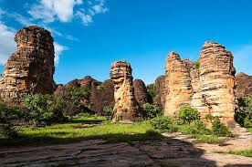